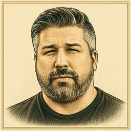
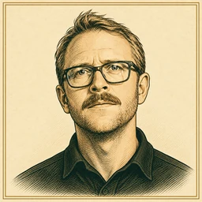
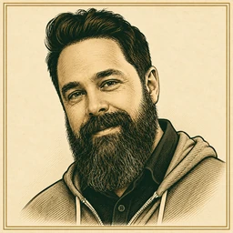
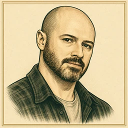

Club History
The beginnings of the Club are to be found, sometime before the pandemic, in the perfectly ordinary circumstance of six friends getting together whenever they could. Both evenings in company and weekends at the cottage are remembered from this early period. The surviving recollections do not permit either to claim precedence.
Once the pleasure of assembling had been established, there remained the less agreeable business of arranging to do it again. In due course the Club set aside the third Friday of each month, at eight o’clock by the Eastern clock, which in winter stands five hours behind Greenwich. This relieved six calendars of the obligation to enter into fresh negotiations on every occasion.
Several of the Club’s observances owe their existence to a suggestion originally advanced for no more solemn purpose than the diversion of the company. The company, finding the suggestion agreeable, would then bestow upon it rather more attention than the occasion strictly warranted. The cottage weekend itself came, in time, to bear the title of Annual Gentlemen’s Assembly.
Sources and revision history
Updated November 2026 · Revision 3
The Editorial Committee reserves the right to replace particularly spirited language with conspicuous euphemisms. Historical accuracy is otherwise maintained. The Editorial Committee is actually just AI we tried to train.
The members

Jamie
Jerome Justin
Justin
Ken
Marc- Matt